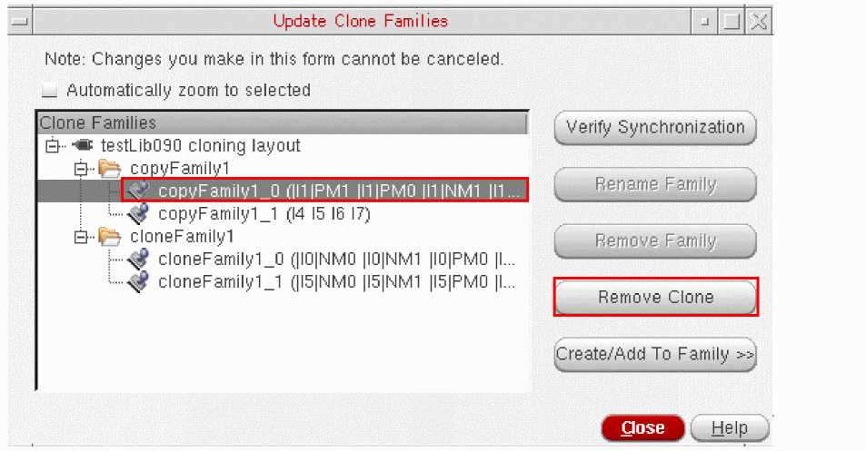
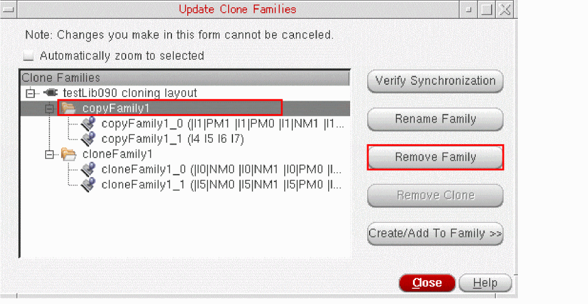

Removing a Clone from a Family
To remove a clone from a family:
-
From the layout window menu bar, choose Connectivity – Update – Clone Families.
The Update Clone Families form is displayed. -
Select the clone to be removed and click Remove Clone.
The selected clone is removed from the family. It is still present in the layout but is no longer synchronized with the other members of the family.
If you remove all except a single clone from a family, the family is automatically removed as well.
You cannot remove a clone if a member of its clone family is currently being edited in place. You need to exit the Edit In Place command first. - Click Close to dismiss the Update Clone Families form.
Removing a Clone Family from Design
To remove a clone family from your design,
-
From the layout window menu bar, choose Connectivity – Update – Clone Families.
The Update Clone Families form is displayed. -
Select the family you want to remove and click Remove Family.
The clone family is removed. The clones it contained are still present in the layout but they are no longer synchronized.
You cannot remove a family if one of its members is currently being edited in place. You need to exit the Edit In Place command first. - Click Close to dismiss the Update Clone Families form.
Related Topics
Return to top